Kata
Geki Sai Dai Ichi
"To Attack and Destory"
The Geki Sai Kata were formulated by Chojun Miyagi Sensei in 1940 as a form of physical exercise for high school boys and to help popularize Goju-Ryu among the public of Okinawa. In 1948, after WWII, Miyagi Sensei began to teach the Geki Sai Kata in depth as a regular part of Goju-Ryu in his own dojo. Until this time, Sanchin was the first Kata taught in Goju-Ryu. Sanchin Kata is a physically and mentally demanding Kata that requires a great deal of time and patience to learn and perform properly. The Geki Sai Kata however are easier to learn and perform, and contain dynamic techniques which are more attractive to young people.
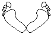
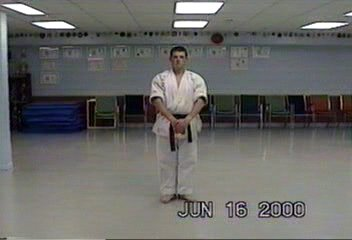
Start: Yoi - Musubi dachi (attention stance)
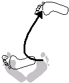

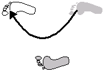
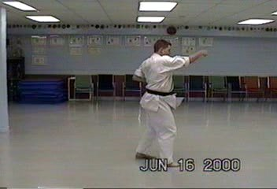
Step forward into a right sanchin dachi (hourglass stance) and do a right jodan tsuki (face punch).
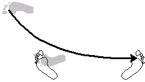
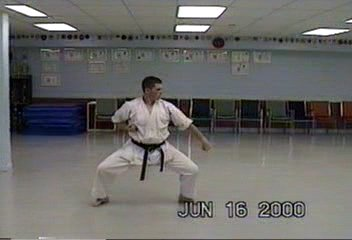
Step back with the right foot, pivot to the right 90 degrees into a shiko dachi (square stance) with a hariatoshi (low sweeping block). Look to the left through entire move.
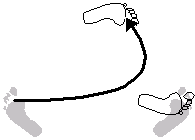
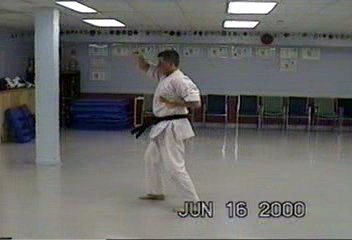
Look to the right 180 degrees. Move left foot into a right sanchin dachin (hourglass stance) with a right jodan uke (rising block).
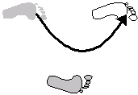
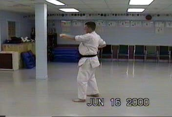
Step forward into a left sanchin dachi (hourglass stance) with a left jodan tsuki (face punch).
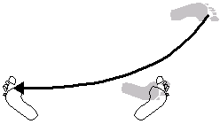
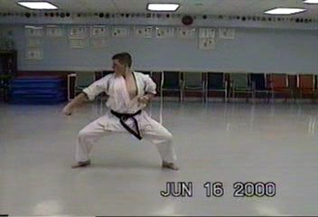
Step back with the left foot, pivot to the left 90 degrees into a shiko dachi (square stance) with a right side hariatoshi (low sweeping block). Look to the right through entire move.
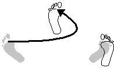

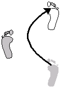
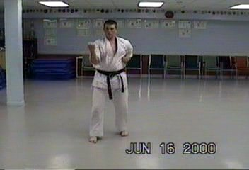
Step forward again into a right sanchin dachi (hourglass stance) with a right yoko uke (side block).
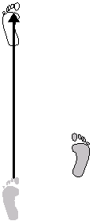
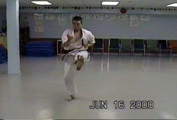
Move forward performing a left mae geri (front kick), landing in zenkutsu dachi (front stance). Execute a left empi uchi (elbow strike), left uraken uchi (backfist strike), a left gedan barai (low block) and finally a gyaku tsuki (reverse punch) and KIAI!
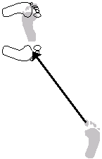
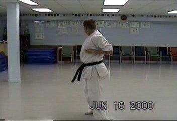
Quickly look over right shoulder. Sweep right foot up and move into hachiji dachi (ready stance) facing your right, with a shuto uchi (knife hand strike) with right hand looking over right shoulder.
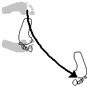
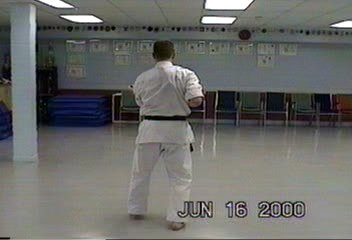
Step forward with left foot into a left sanchin dachi (hourglass stance) and execute a yoko uke (side block).

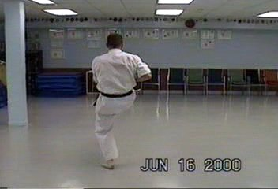
Move forward performing a right mae geri (front kick), landing in zenkutsu dachi (front stance). Execute a right empi uchi (elbow strike), right uraken uchi (backfist strike), a right gedan barai (low block) and finally a gyaku tsuki (reverse punch)and KIAI!
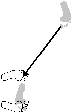

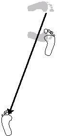
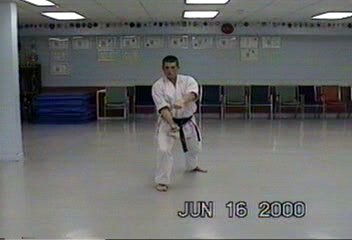
Move left foot back into a right zenkutsu dachi (front stance). Pull your left hand (palm down) into a fist to your left chamber. Meanwhile, the right hand remains in the right "chamber" in a fist (palm up). Quickly thrust both fists forward, left down, right up. This is a yama tsuki ("U" punch), the top fist is directed to the solar plexus while the lower fist is directed to the lower abdomen of your opponent.
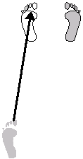
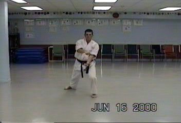
Step forward into hachiji dachi (ready stance). Move right arm across the body into the crease of the elbow of the left arm. This action reverses the position of the fists. Quickly step back into a zenkutsu dachi (front stance) pulling the fists back into their chambers. Now the left is palm up and the right fist is facing down. Quickly thrust both fists forward, left up, right down into yama tzuki ("U" punch).
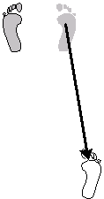
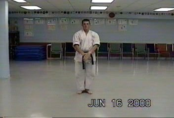
End: while in zenkutsu dachi (front stance), open the left hand and move right hand in a half circle (fist closed) and lay into the open palm. Step forward into musubi dachi (attention stance), keeping knees slightly bent. Slowly straighten the knees and turn hands towards your body so that your arms a straight and hands crossed in front of you left over right. Open your right hand.